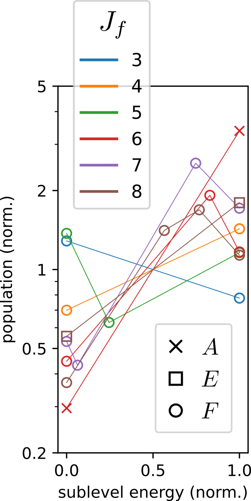

in our experiments studying collisions between molecules and solid surfaces we observed something peculiar. our experimental technique allows us measure how the different energy levels of the molecules are populated. we found that after scattering from the surface the molecules tended to populate certain energy levels over others. this in itself is not strange. what was strange was that for every highly populated level there was very often another energy level that was not only nearly the same energy but also possessed the same number of quanta of molecular rotation. it is interesting that two energy levels could in many important respects be the same yet possess very different populations after scattering.

see figure 1 for a graphical summary of the experimental results for methane (CH4) molecules scattering from a gold surface. plotted on the y axis are the level populations. we group levels by connecting them by lines, and levels within a group simultaneously:
what does this trend tell us about the nature of the molecular motion being excited by the surface collision? for a perfectly rigid methane molecule, energy levels of equal $J_f$ will have exactly the same energy. in reality, the rotation of the molecule will cause its C-H bonds to slightly stretch, with the effect that, for equal total angular momentum, it requires slightly more energy to rotate about some axes than for others. for example, it takes more energy to spin the molecule along the axis formed by a C-H bond than to spin along an axis bisecting two C-H bonds, and an intermediate amount of energy to spin along an axis perpendicular to a H-C-H bond plane. so our experimental observations are telling us that the surface collision exciting larges amount of rotation will tend to align the rotation away from these bisector axes. this result is a clean example of the kind of fine-grained insight into the molecule-surface dynamics that our "quantum state resolved" scattering experiments provide.
now suppose we would like to see if classical trajectory simulations of the scattering process support our interpretation of our measured level populations. do the simulated trajectories show a suppression of rotational excitation about the bisector axes? how do we quantify this? let's first analyze the case of the perfectly rigid molecule and then generalize to the case where the molecule is permitted to stretch and bend. for generality, consider a molecule composed of $N$ atoms of mass $m_n$, $n=1,\ldots,N$. if the molecule is rigid, its geometry is completely specified by its
let's take a concrete example of the methane molecule. it's equilibrium geometry is that of a tetrahedron with the four hydrogen atoms occupying the vertices and the carbon atom occupying the center. denoting the C-H bond length by $r_o$, we can define a reference system via:
there is however the practical question of, given the positions $X_n$ of the atoms, how does one determine which $R$ satsifies the equation $x_n = R x^o_n$? well this is simply the matrix $R$ for which the distances $|x_n - x^o_n|$ vanish, i.e we seek the rotation matrix $R$ minimizing the quantity $$ \sum_n |x_n - R x^o_n|^2 = \sum_n \left( |x_n|^2 + |R x^o_n|^2 - 2 x_n \cdot R x^o_n \right) $$ since $|R v| = |v|$ for any vector $v$, we see we can alternatively formulate our condition for $R$ as the maximizer of the quantity $$ \sum_n x_n \cdot R x^o_n = \sum_n \left( R x^o_n \right)^T x_n = \sum_n \text{Tr}\left( {x^o_n}^T R^T x_n \right) = \text{Tr}\left( R^T S \right) $$ with $S = \sum_n x_n {x^o_n}^T$ and the last step following by the cyclicity of the trace. we then taking the singular value decomposition $S = U\Sigma V^T$ of $S$, where $U$ and $V$ are orthogonal matrices and $\Sigma$ is a diagonal matrix with non-negative diagonal entries. inserting the expansion, our expression to be maximized becomes $$ \text{Tr}\left(R^T U \Sigma V^T\right) = \text{Tr}\left(V^T R^T U \Sigma\right) = \sum_{i,j=1}^3 W_{ij} \Sigma_{ji} $$ where $W = V^T R^T U$, being the product of three orthogonal matrices, is itself orthogonal. noting $\Sigma_{ij} = \sigma_i \delta_{ij}$ for some diagonal entries $\sigma_i$, we have $$ \sum_{i,j=1}^3 W_{ij} \Sigma_{ji} = \sum_j W_{jj} \sigma_j $$ this expression is maximized just when $$ W = \mathbb{I} $$ so that we obtain our solution $$ R = UV^T $$
so we can solve for $R$ from the singular value decomposition of $S$. there is however a possible issue one can encounter that we glossed over in the above derivation that we now consider more carefully. what happens if there are vanishing singular values $\sigma_i$? if there is only one vanishing singular value, e.g. $\sigma_3=0$, then our expression is still maximized by setting $W_{11}=W_{22}=1$, in which case the orthgonality of $W$ requires $W_{33} = \pm 1$ and $W_{ij}=0$ when $i \neq j$. if $\text{det}\left(UV^T\right) = 1$ we can take $W_{33} = +1$ and so that $\text{det}\left( R \right) = +1$ and is a valid rotation matrix. if on the other hand $\text{det}\left(UV^T\right) = -1$ we can negate the third column of either $U$ or $V$ without changing the decomposition since $$ S_{ij} = \sum_k \sigma_k \left[ u_k \right]_i\left[ v_k \right]_j $$ where $\left[ m_j \right]_i = M_{ij}$ denotes component $i$ of column vector $j$ of a matrix $M = \begin{bmatrix} m_1, m_2, \ldots \end{bmatrix}$. after the negation $\text{det}\left(UV^T\right)$ is then positive so we can again pick $W_{33} = +1$ to get a rotation matrix $R$. the physical meaning of a single vanishing singular value can be understood by looking at $S$ at $x_n = Rx^o_n$ so that $$ S = \sum_n x_n x_n^T $$ so that $S$ decomposes into a sum of $N$ positive semidefinite matrices. that a singular value can vanish implies the existence of a vector $y$ such that $y \cdot x_n$ vanishes for all $x_n$, or in other words that the reference configuration $x^o_n$ is planar. the sign ambiguity $W_{33} = \pm 1$ is just a consequence of the fact that a planar reference configuration is invariant under a reflection about the plane containing the $x^o_n$.
by similar reasoning, two vanishing singular values implies a linear reference configuration so that, given any rotation matrix $R$ satisfying $x_n = R x^o_n$ we can generate another solution $RO$ by "prepending" a matrix O that rotates the reference configuration about its axis or reflects about a plane containing the axis. what does three vanishing singular values imply?
when the molecule is allowed to stretch and bend, there is no longer in general a solution to the equation $x_n = R x^o_n$. indeed we must consider possible distortions $d_n$ of the atoms so that $$ x_n = R\left( x^o_n + d_n\right) $$ the distortions $d_n$ are defined by the constraints, known as the eckart conditions, requiring $$ \sum_n m_n d_n = 0 $$ and $$ \sum_n m_n x^o_n \times d_n = 0 $$ we are now faced with the problem, similar to that faced for the rigid molecule, of determining the rotation matrix $R$ yielding $d_n$ in compliance with the second eckart condition. note that by the defining the $x_n$ and the $x^o_n$ to have zero center of mass it straightforwardly follows that the $d_n$ must also have a vanishing center of mass and are therefore compliant with the first eckart condition. to address the second eckart condition, we retain the intuition from the rigid molecule case that the $R$ we seek is the one minimizing the displacements $d_n$. it turns out we do not want to minimize $\sum_n |d_n|^2$ but rather the mass-weighted sum $$ \sum_n m_n |d_n|^2 = \sum_n m_n |x_n - R x^o_n|^2 $$ or, equivalently, we want to maximize the expression $$ \sum_n m_n x_n \cdot R x^o_n $$ to see this we note the space of rotation matrices is three dimensional, and we can define a gradient on functions $f(R)$ via the limit $$ \left[ \nabla f \right]_i \left(R\right) = \lim_{\epsilon \to 0} \frac{f\left(R \left( 1 + \epsilon e_i \times \left(\cdot\right) \right) \right) - f\left(R\right)}{\epsilon} $$ so for a function $f(R)$ that is linear in $R$ a critical point $R_o$ should have the property that $$ f\left(R_o e_i \times \left( \cdot \right) \right) = 0 $$ for $i=1,2,3$. applying this property, then, we have at the critical point that $$ \sum_n m_n x_n \cdot R \left(e_i \times x^o_n\right) = \sum_n m_n R^T x_n \cdot e_i \times x^o_n = e_i \cdot \sum_n m_n x^o_n \times R^T x_n = 0 $$ since this holds for all $i$, this means $$ \sum_n m_n x^o_n \times R^T x_n = 0 $$ expanding $R^T x_n = x^o_n + d_n$ and applying the identity $v \times v = 0$, the critical point condition becomes $$ \sum_n m_n x^o_n \times d_n = 0 $$ which is exactly the second eckart condition. so the critical points of the sum mass-weighted squared displacements satisfy the eckart conditions, and vice versa.
to solve for the maximum of $\sum_n m_n x_n \cdot x^o_n$ we perform the same manipulations and reasoning as was done for the rigid case, recovering the solution $$ R = UV^T $$ where $U \Sigma V^T$ is the singular value decomposition of the mass-weighted matrix $S$ defined by $$ S = \sum_n m_n x_n {x^o_n}^T $$ for the non-rigid case there is a still the complications associated with vanishing singular values. because $S$ is no longer positive semidefinite we can not conclude that vanishing singular values imply configurations $x_n$ or $x^o_n$ of reduced dimensionality, only that from one solution $R$ we can prepend proper or improper matrices $O$ such that the $Rx^o_n$ and $RO x^o_n$ "overlap" equally with the configuration $x_n$ under consideration.
a new possibility that occurs for the non-rigid case is that of a $UV^T$ of negative determinant despite there being no vanishing singular values. in this case the matrix $UV^T$ maximizing the mass-weighted overlap of the configuration is an improper rotation. this corresponds to cases where the molecular framework more closely resembles the inversion version $x^o_n \to -x^o_n$ of the reference configuration than the reference configuration itself. the configurations $x_n$ yielding $S$ matrices with vanishing singular values mark the boundary between the inverted and noninverted configurations.
when the eckart conditions are employed, the body-fixed angular momentum takes the following expression $$ J' = I\omega + \pi $$ where: